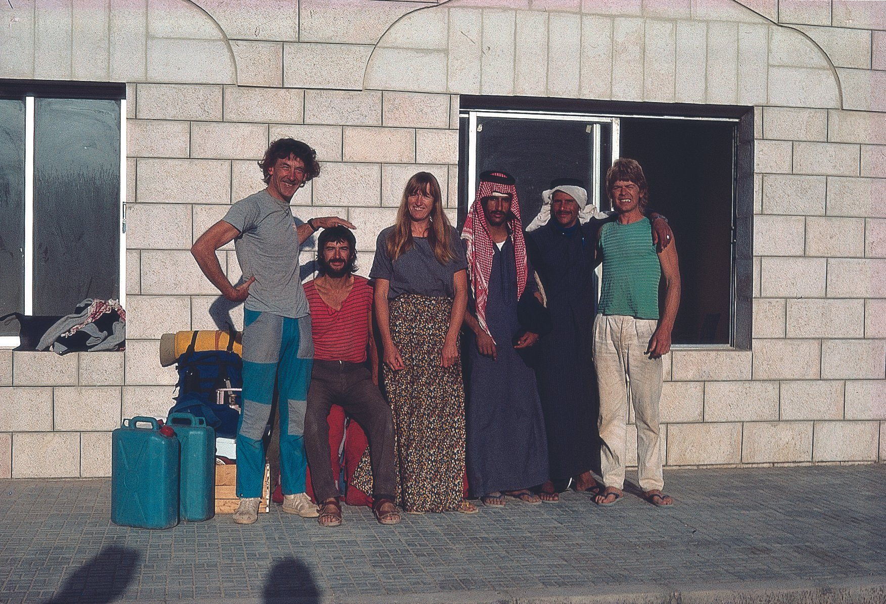
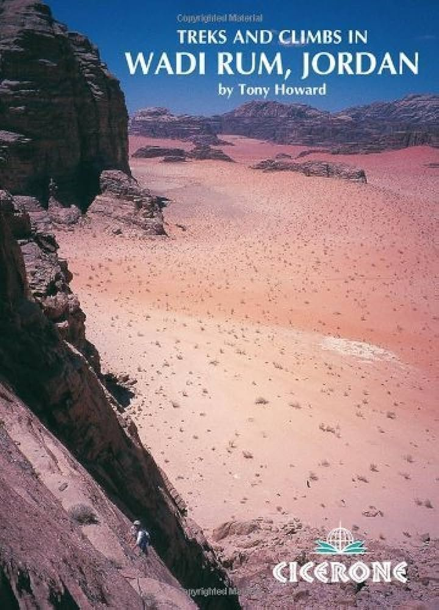
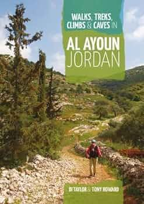
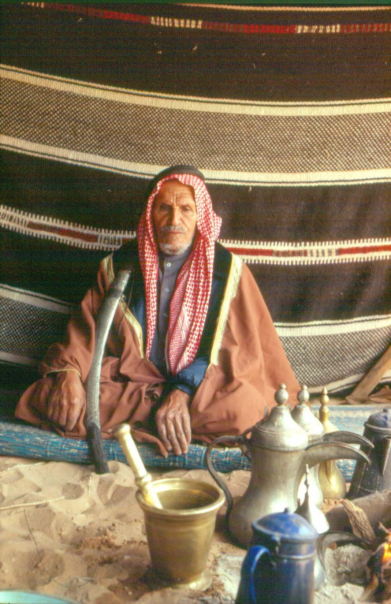
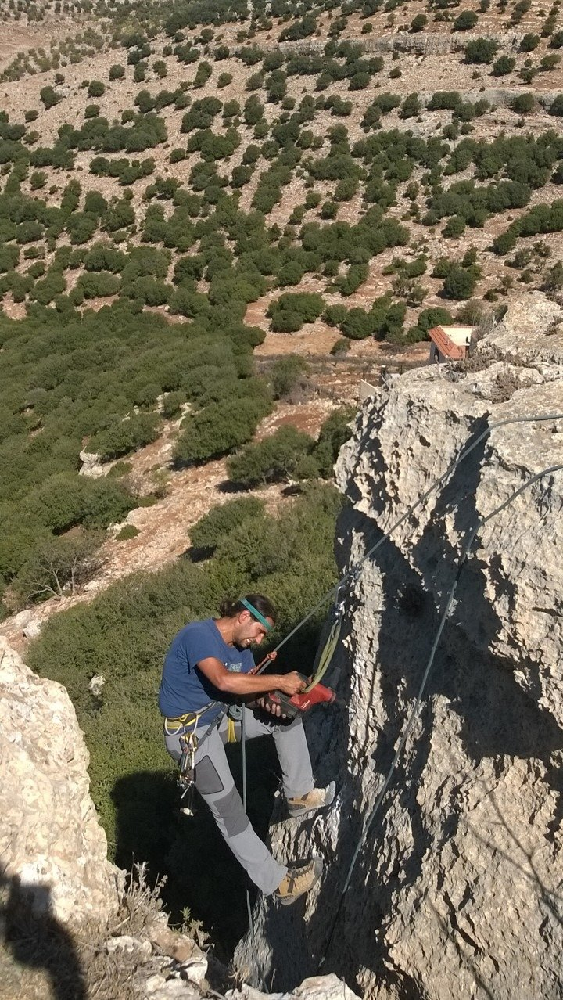
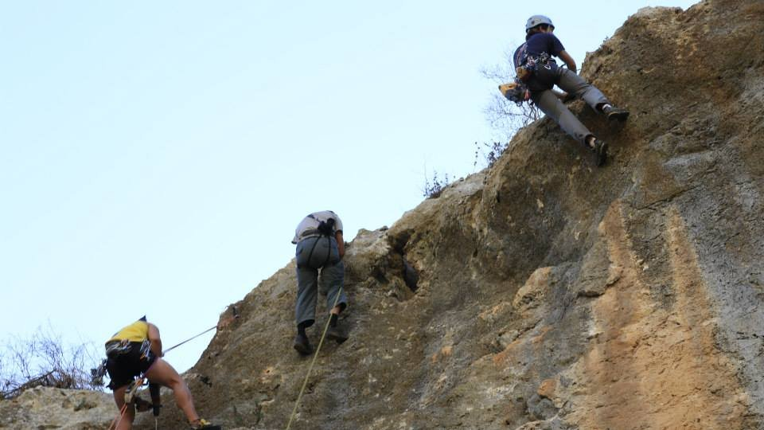
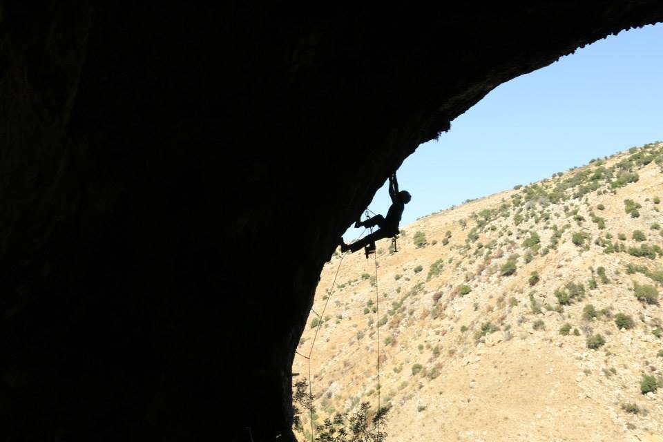

History of
Jordan's rising popularity as a sport climbing destination is deeply rooted in the rich tradition of the Bedouin people. Nomadic Bedouins were known to scale mountains for essential resources like herbs, water, and hunting. This age-old practice has evolved into a thriving climbing community that is steadily growing. Over the years, foreigners initiated outdoor climbing development in Jordan, with their efforts carried forward by local climbers. Today, the Jordanian climbing scene benefits from community support and the establishment of a climbing federation, making it a diverse and inclusive sport in the country. Climbers can explore the unique landscapes, experience cultural immersion, and be part of a dynamic and evolving climbing culture.






